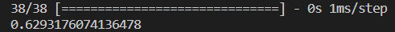
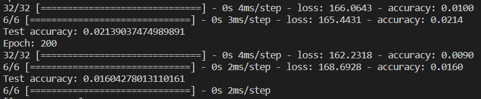
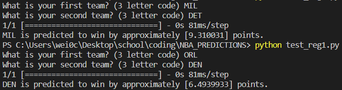
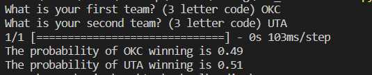

Regression Model 1
Overview
This was also generated using the Keras and TensorFlow libraries, and was trained using the same team statistics as the Classification 1 model. However, instead of inputting win/loss as a binary, I used a continuous variable, point differential. Ideally, this variable would give more information than the binary win/loss, as the sign of the value tells which team won, and the value tells how much they won by. By introducing margin of victory into the model, I hoped to see an improvement, as blowouts (games won by a lot) would be weighted heavier than narrow victories.
Results
Although I was optimistic that this model, with victories and losses weighted by point differential, would perform better than the classification model, it performed roughly the same, with an accuracy of approximately 0.63, which is still a number that I am extremely happy with given the simplicity of the model and look forward to its potential as I add more complexities.

One thing to note is that the accuracy generated when training the model was extremely low, as a ‘correct’ response was that the model predicted the winner and exact margin of victory. After writing a script where ’correct was choosing the correct winner, accuracy increased to 0.63.

It is a good sign that the model is able to have a grasp on the relative strength of teams, as it predicted the Denver Nuggets, an elite team, to win by a decent margin against the Orlando Magic, a middle of the pack team and the Milwaukee Bucks, another elite team, to have an even larger victory against the Detroit Pistons, a bottom 5 team in the league.

In addition, it predicted an extremely close match-up between two average teams, the Utah Jazz and Oklahoma City Thunder.

Limitations
Like the Classification 1 model, this model is hindered by the lack of inclusion of many important variables, discussed in Classification 1. Another limitation of my first iteration of models is the lack of data. As an NBA season is only 82 games for each team, this leaves us with a relatively small dataset to train with. A way to mitigate this would be to also include past seasons in the training data, but in order to do so, the players on each given team would have to be accounted for, most likely by an aggregate statistic. This would account for injuries, trades, free-agent signings, and retirements, so players would only contribute to the team they are currently on, but their past performances can help train the model to determine how much a player can help lead his team to victory.
Github
As I do not currently have a functioning front end where you can test these models, here is a link to my source code and models.